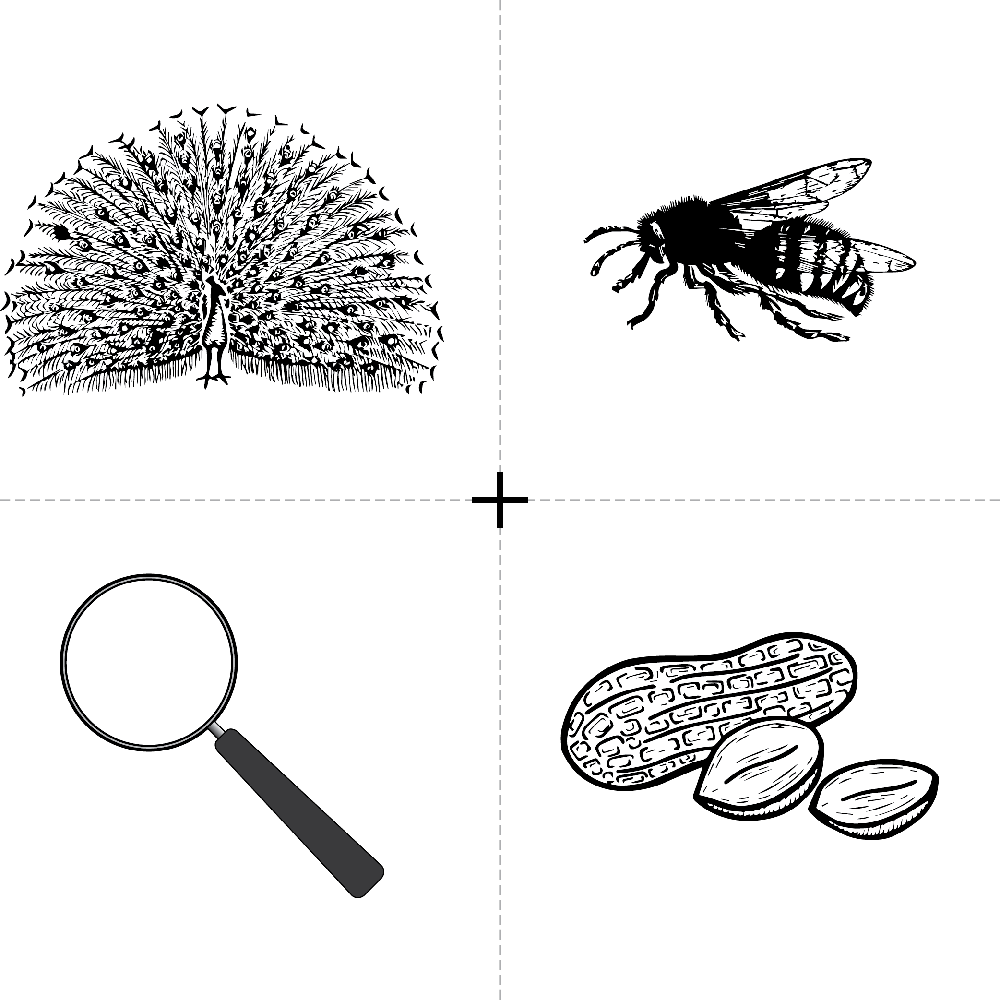

↵ Back to module homepage
The visual world paradigm can be used for all kinds of different research. We looked at a few examples so far, but it can be used for pretty much any topic of linguistics; there's visual world research examining pragmatics, bilingualism, semantics, morphology, everything.
Below is a list of several really cool visual world eye-tracking experiments, and a list of several linguistics topics. Browse the papers and match the topics to the papers.
Experiments
- Spivey, M., & Marian, V. (1999). DOI: 10.1111/1467-9280.00151
- McMurray, B., Tanenhaus, M., & Aslin, R. (2000). DOI: 10.1016/S0010-0277(02)00157-9
- Wang, X., Wang, J., & Malins, J. (2017). DOI: 10.1016/j.cognition.2017.07.013
- Huang, Y., & Snedeker, J. (2009). DOI: 10.1016/j.cogpsych.2008.09.001
- Xu, X., Ji, C., Li, T. & Pickering, M.J.(2024). DOI: 10.1080/23273798.2024.2395549
- Chow, W., & Chen, D. (2020). DOI: 10.1080/23273798.2020.1733627
Topics
- Bilingualism
- Bilingualism
- Pragmatics
- Sentence comprehension
- Sentence comprehension + Phonetics
- Phonetics
NOTE: When looking for research articles, you often find that they are 'locked'. Unfortunately, this is normal. The good news for us is that we have access to most articles through the university library. So if you find an article that you want to look at (either for this week's assignment or at other times), you can try to access it through the library: https://www.lib.polyu.edu.hk/
For next week, your assignment is to send me two things:
- A list matching the articles with the topics (e.g., 1. Spivey & Marin (1999) = X)
- Choose one of the papers and write a brief summary of (a) what it's about, (b) what they did, and (c) why you find it interesting. Your summary should be no longer than 200 words (if it is, I may deduct points).
ADDITIONAL READING (this is 100% optional, there's no assignment, it's just here if you're interested in learning more)
What's here is only a tiny sample of the visual world eye-tracking experiments in the world. For a huge review of eye-tracking research, see this paper:
And for those interested in eye-tracking research on reading, here's a useful bibliography of review and summary papers:
- Boland, J. (2004). Linking eye movements to sentence comprehension in reading and listening. In M. Carreiras & C. Clifton (Eds.), The on-line study of sentence comprehension: Eyetracking, ERP, & beyond. Psychology Press.
- Clifton, C., Staub, A., & Rayner, K. (2007). Eye movmements in reading words and sentences. In R. van Gompel and X. Vamvakoussi (Eds.), Eye Movements: A Window on Mind and Brain. Amsterdam: Elsevier Science.
- Liversedge, S., & Blythe, H. (2007). Lexical and Sublexical Influences on Eye Movements During Reading. Language and Linguistics Compass, 1, 17-31.
- Liversedge, S., Paterson, K., & Pickering, M. (1998). Eye movements and measures of reading time. Eye Guidance in Reading and Scene Perception. pp. 55-75.
- Rayner, K., & Sereno, S. (1994). Eye movements in reading: Psycholinguistic studies. Journal of Multivariate Analysis.
by Eric Pelzl, adapted from materials originally created by Stephen Politzer-Ahles. Last modified on 2025-Oct-17. CC-BY-4.0.